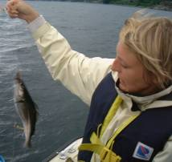
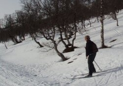

Voit olla mukana tilan toiminnassa, kalastella joilla, järvillä tai merellä, uida tai retkeillä. Käytä ikoneita vasemmalla
saadaksesi lisää tietoa.
On tekemistä sekä kesällä että talvella. Jos olot suosivat talvella voit hiihtää ja laskea mäkeä suoraan oven ulkopuolella
tai voit tehdä pidempiä retkiä maastossa.
Stavangerin ja Sandnesin kaupunkikeskukset sijaitsevat vain puolentoista tunnin matkan päässä, jos toivot lisäksi kaupungin
tarjouksia. Jos lähdet ajoissa liikkeelle , voit myös tehdä päivän matkan Bergeniin ja Haugesundiin.